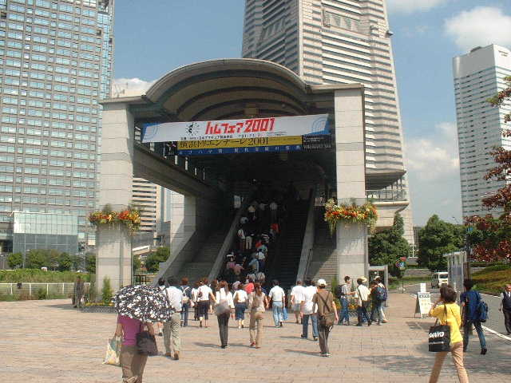
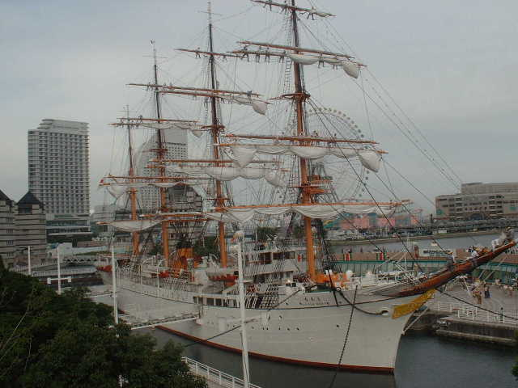
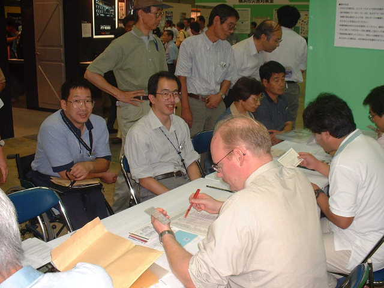

|
Flash ! DX
|

Ham Fair 2001
Fair Album
第31回VSG全国大会(静岡)
|
Flash ! DX
|

[Back Issues Sep.2001]
TIME:UTC(JST-09:00)
Report from JA1RJU (PM95sq)
30.Sep.2001(15:00g)
*VK-TV 00:00- 46.172 --
*9M-TV 00:00- 48.240/250 --
VK4BLK 03:15 50.110 CW
VK4BRG 03:24- 50.077 CW Beacon
VK8RAS 03:40- 50.047 CW Beacon
VK6RSX 05:15- 50.304 CW Beacon
GM4COK/MM 08:40 50.110/106 CW QTH GL=OJ47(Nr Spratly Is)
FK8CA 08:42 50.110 CW
VK4FNQ 09:50 50.110/130 SSB
VK4CXQ 12:19 50.110 CW
VK8RAS 12:20- 50.047 CW Beacon
VK4BRG 12:20- 50.077 CW Beacon
VK6RSX 12:20- 50.304 CW Beacon
VK4ABP 12:20- 52.347 CW Beacon
VK4RIK 12:20- 52.445 CW Beacon
9M6US 12:20 50.115 SSB QSL Via N2OO
VK4FNQ 12:20 50.130 SSB
9M2/JI1ETU 12:28 50.085 CW Beacon
GM4COK/MM 12:45 50.106 CW
VK8MS 13:15 50.110/150 CW/SSB
N7ET/DU7 13:25 50.102 CW
| ◎ 相変わらず夜間の東南アジア、大陸方面が良くオープンしている。 ただ、この方面の伝搬の良いパイロットとなっていたマレーシア・ペナン(Penang)島の9M2TO/Bのビーコンは、 9M2TO・出雲さんが帰国されているため現在停波している。 |
29.Sep.2001(15:00g)
*VK-TV 00:00- 46.172/240 --
*ZL-TV 00:00- 45.24/25/26--
*9M-TV 00:00- 48.240/260 --
VK4RGG 00:30- 50.057 CW Beacon
VK4APG 01:35 50.110 CW
VK4BLK 02:13 50.110 CW
VK8RAS 03:40- 50.047 CW Beacon
VK4BRG 03:55- 50.077 CW Beacon
VK6RSX 05:10- 50.304 CW Beacon
3D2AG 08:45 50.110/105 CW/SSB
FW5ZL 08:52 50.115 CW/SSB
VK4FNQ 09:50 50.110/130 SSB
VK8RAS 09:50- 50.047 CW Beacon
VK4BRG 09:50- 50.077 CW Beacon
VK6RSX 09:50- 50.304 CW Beacon
VK4ABP 09:50- 52.347 CW Beacon
VK6JQ 12:27 50.110 CW
VK4CXQ 12:31 50.110 CW
9M6SMC 13:20- 50.014.4 CW Beacon
9M6US 14:23 50.110 SSB QSL Via N2OO
VK4ABW 14:23 50.110 SSB
9M2/JI1ETU 14:35 50.135 SSB
28.Sep.2001(15:00g)
*VK-TV 00:00- 46.172 --
VK4TZL 04:43 50.110/130 SSB
V73SIX 06:00- 50.014 CW Beacon
VK4SJF 06:08 50.110 SSB
VK8RAS 06:10- 50.047 CW Beacon
*9M-TV 07:00- 48.240/260 --
FW5ZL 08:39 50.110 CW
FK8CA 09:00 50.110 CW
VK4BLK 09:10 50.110/105 CW
VK8RAS 09:10- 50.047 CW Beacon
VK4BRG 09:10- 50.077 CW Beacon
VK6RSX 09:10- 50.304 CW Beacon
VK4ABP 12:00- 52.347 CW Beacon
VK4RIK 12:00- 52.445 CW Beacon
VK4ABW 12:00 50.110 SSB
VK6JQ 12:03 50.108 CW
(A45XR 12:25 50.110 CW JR6)
VK4FNQ 12:30 50.110/130 SSB
DU1EV 12:44 50.110/130 SSB/CW
9M6US 12:50 50.110/115 SSB QSL Via N2OO
XV3AA 12:55 50.130 SSB
VK4CXQ 12:59 50.110 CW
YC1MH 13:56 50.110 SSB
9M2/JI1ETU 14:35 50.085 CW Beacon
N7ET/DU7 14:45 50.101 CW
| ◎ 今年は早朝のロングパスによるEU方面のオープンの目安となる南米とEU間のパスはあまり活発ではなかったが、 今朝は久しぶりに多くのリポートがクラスターに寄せられていた。 昨年の秋は南米の入感の前にロングパスがオープンしたが、今シーズンもSSN/SFとも250を超えていて条件は悪くなさそう。 |
27.Sep.2001(15:00g)
*VK-TV 00:00- 46.172 --
*ZL-TV 00:00- 45.24/25/26--
*9M-TV 03:00- 48.240 --
V73SIX 03:50- 50.014 CW Beacon
VK8RAS 06:20- 50.047 CW Beacon
VK4BRG 06:20- 50.077 CW Beacon
VK4ABP 06:20- 52.347 CW Beacon
(FR1GZ 07:50 50.110/120 SSB JA2-6)
VK6RSX 08:00- 50.304 CW Beacon
FK8CA 08:30 50.110 CW
FW5ZL 08:31 50.110/115 CW
V73SIX 09:00- 50.014 CW Beacon
VK4FNQ 09:18 50.110 SSB
V73AT 09:32 50.110 CW
VK4CP 09:43 50.110 SSB
VK8RAS 11:00- 50.047 CW Beacon
VK4BRG 11:00- 50.077 CW Beacon
VK6RSX 11:00- 50.304 CW Beacon
VK4ABP 11:00- 52.347 CW Beacon
VK6JQ 11:10 50.107/115 CW
VK4CXQ 11:25 50.110 CW
VK4RIK 12:00- 52.445 CW Beacon
VK4APG 12:30 50.110 CW
VR2XMT 12:39 50.110 SSB
VK4ABW 12:39 50.110 SSB
XV3AA 12:55 50.130 SSB
VR2HAM 13:00 50.105 CW
DU1EV 13:40 50.106 CW
(9N7QJ 13:45 50.110 SSB JR6)
26.Sep.2001(15:00e)
*VK-TV 05:00- 46.172 --
FK8CA 09:07 50.110 CW
V73SIX 09:07- 50.014 CW Beacon
VK8RAS 09:50- 50.047 CW Beacon
VK4ABP 09:50- 52.347 CW Beacon
VK4BLK 09:50 50.110 CW
VK6RSX 12:00- 50.304 CW Beacon
VK6JQ 12:12 50.110 CW
VK4CXQ 12:13 50.110 CW
25.Sep.2001(15:00g)
*VK-TV 02:30- 46.172/240 --
*9M-TV 07:00- 48.240/260 --
VK8RAS 07:50- 50.047 CW Beacon
VK4APG 08:48 50.110 CW
VK4WTN 08:49 50.110 SSB
VK4BRG 08:50- 50.077 CW Beacon
VK4BLK 08:54 50.110 CW
FK8CA 09:00 50.110 CW
FW5ZL 09:20 50.115 CW
VK8RAS 13:00- 50.047 CW Beacon
VK4BRG 13:00- 50.077 CW Beacon
VK6RSX 13:00- 50.304 CW Beacon
VK4ABP 13:00- 52.347 CW Beacon
VK4RIK 13:00- 52.445 CW Beacon
9M2/JI1ETU 13:10 50.085 CW Beacon
VK6JQ 13:15 50.110 CW
VR2HAM 13:20 50.105 CW
(A45XR 13:21 50.110 CW JR6VSP)
VR2XNG 14:06 50.110 SSB QSL Via VR2XMT
VR2XMT 14:15 50.115/110 SSB
VR2UD 14:15 50.120 SSB
VR2YEL 14:50 50.150 SSB
DU1/GM4COK 14:59 50.110/115 CW/SSB QSO with G0KZG/MM
|
◎ JD1BKZ QSL JD1BKZ & JM1MKB/JD1 have been active on 6m from Ogasawara Is.(AS-031,GL=QL17CC) with TS-690S and hat-hentena and they will stay there next 3-5years. Their QSL info are as follows bureau. If you need QSL faster than bureau, you can QSL to JE2DWZ with SAE and sufficient $ or IRC. Since QSLing via bureau takes a bit longer, I will be pleased to handle their QSL as a QSLmanager. Their QSL cards will be printed soon.. Will you please put the above information on your web site? Keep up the good work on your website. .
QSL to JE2DWZ Yoshiyuki Mori
20-16 Takiko-cho,Showa,Nagoya,466-0053 JAPAN
|
24.Sep.2001(15:00g)
*BY-TV 00:00- 49.750 --
*VK-TV 00:00- 46.172 --
VK8RAS 03:00- 50.047 CW Beacon
VK4BRG 03:00- 50.077 CW Beacon
VK6JJ 03:00 50.110 CW
VK4AKM 03:05 50.092 CW/PSK
VK4BLK 03:20 50.110 CW
YJ8UU 04:00 50.110/120 SSB
VK4AFL 04:30 50.110 SSB
*9M-TV 06:00- 48.240/260 --
FK1TK 08:30 50.130 SSB
3D2AG 08:43 50.110 CW
V73SIX 08:50- 50.014 CW Beacon
VK4AJS 09:00 50.110 SSB
VK6RSX 09:00- 50.304 CW Beacon
VK4BRG 09:00- 50.077 CW Beacon
VK8RAS 09:00- 50.047 CW Beacon
VK4ABP 09:10- 52.347 CW Beacon
VK4FNQ 09:25 50.110/130 SSB
VK4RIK 12:45- 52.445 CW Beacon
VK6RSX 12:45- 50.304 CW Beacon
VK4ABP 12:45- 52.347 CW Beacon
WH7C/DU1 12:44 50.200 SSB
DU1EV 13:00 50.110/130 SSB
DU1/GM4COK 13:48 50.110 CW
YB5QZ 13:58 50.110 CW
9M2/JI1ETU 14:00 50.085 CW Beacon
| ◎ 午前中のコンデションは相変わらず低調だが、午後の太平洋方面と夜間の南西方向は良く聞こえている。 昨夜は沖縄からロングパスによる中米(TI5KD)の入感がリポートされている。 中米のロングパスは昨年よりも2週間ほど早いが、今年もこのコンデションが本土まで伸びるのか興味のあるところ。 |
23.Sep.2001(15:00h)
*VK-TV 00:00- 46.172/240 --
*ZL-TV 00:00- 45.24/25/26--
*BY-TV 00:00- 49.750 --
VK4BRG 03:40- 50.077 CW Beacon
VK4CWJ 04:40 50.110/115 SSB
VK4RGG 04:45- 50.057 CW Beacon
VK2YO 04:47 50.110 SSB
VK4PU 04:47 50.110 SSB
VK2BA 04:57 50.110 SSB
VK4XAR 05:18 50.110 SSB
VK8RAS 05:40- 50.047 CW Beacon
VK5AYD 07:00 50.110 SSB
3W3ZZ 07:54 50.130 SSB QSL Via JA1EUI
V73SIX 08:15- 50.014 CW Beacon
FW5ZL 08:41 50.110 CW
VK6RSX 09:20- 50.304 CW Beacon
VK4BRG 09:20- 50.077 CW Beacon
VK4CXQ 09:23 50.110 CW
VK8MS 11:55 50.110 CW/SSB
VK4RIK 12:00- 52.445 CW Beacon
VK4ABP 12:00- 52.347 CW Beacon
VK8RAS 12:00- 50.047 CW Beacon
VK4ABW 14:08 50.110 SSB
(TI5KD 14:58 50.110 SSB JR6VSP/Long path)
22.Sep.2001(15:00i)
*VK-TV 03:30- 46.172 --
V73SIX 05:30- 50.014 CW Beacon
*9M-TV 07:00- 48.240/260 --
*BY-TV 07:00- 49.750 --
FK1TK 07:10 50.115/125 SSB
VK8RAS 07:15- 50.047 CW Beacon
VK6RPH 07:15- 50.066 CW Beacon
FK8CA 07:35 50.110 CW
DU1/GM4COK 07:48 50.110 CW
VK4NW 07:50 50.110 SSB
VR2XMT 07:52 50.110/115 SSB
VK4APG 08:05- 50.110/130 SSB
VK4RGG 08:10- 50.057 CW Beacon
VK4TZL 08:15 50.110 SSB
VR2LC 08:20 50.100 CW
VK6RO 08:28 50.108 CW/SSB
BG7OH 08:34 50.130 SSB
VR2YYW 08:43 50.165 SSB
VK6RSX 08:45- 50.304 CW Beacon
VK6ADI 08:45 50.208 SSB
BG7ICN 09:25 50.110 SSB
VK8RAS 11:30- 50.047 CW Beacon
VK6RPH 11:30- 50.066 CW Beacon
VR2ZXP 12:09 50.110/120 SSB
VR2IL 12:13 50.120 SSB
VK6JQ 12:30 50.110 CW
DU1EV 12:45 50.110/115 SSB/CW
VR2LC 13:02 50.110 CW
DU1/GM4COK 13:05 50.106 CW
9M2/JI1ETU 13:55 50.085 CW Beacon
VR2UD 14:00 50.110 SSB
VK8MS 14:15 50.110 SSB
|
◎ 3連休の初日、東京地方は11月下旬並の冷え込み。"体感温度は"DXシーズン真っ盛り?。 午前中の東方向のコンデションはまだ上昇して来ないが、午後からの南太平洋、夜間の東南アジア、大陸方面は本格的なオープンになって来た。 |
21.Sep.2001(15:00g)
*VK-TV 01:00- 46.172 --
VK4BRG 04:20- 50.077 CW Beacon
VK8RAS 05:00- 50.047 CW Beacon
FK8CA 08:25 50.110 CW
VK6RSX 09:00- 50.304 CW Beacon
VK4TZL 09:01 50.110 SSB
VK4BRG 09:30- 50.077 CW Beacon
VK4ABP 09:30- 52.347 CW Beacon
VK8RAS 09:30- 50.047 CW Beacon
V73SIX 09:50- 50.014 CW Beacon
P29PL 09:53 50.110 SSB
VK6JQ 11:48 50.110 CW
VK5AYD 11:48 50.110 CW
VK4FNQ 12:04 50.110/130 SSB
VK4RIK 12:05- 52.445 CW Beacon
VK4ABW 12:33 50.110 SSB
VK4APE 12:36 50.110 SSB
DU1EV 12:50 50.150 SSB
XV3AA 12:54 50.135 SSB
YC1MH 13:03 50.110 SSB
YB0CBI 13:11 50.110 SSB
DU1/GM4COK 14:28 50.110 SSB
| ◎ 夜間の東南アジア、大陸方面は今日も強力に入感した。 |
20.Sep.2001(15:00h)
*VK-TV 04:00- 46.172/240 --
*ZL-TV 04:00- 45.24/25/26-- weak
VK6RSX 04:20- 50.304 CW Beacon
VK8RAS 04:20- 50.047 CW Beacon
VK4BRG 04:20- 50.077 CW Beacon
V73SIX 05:00- 50.014 CW Beacon
*9M-TV 05:00- 48.240 --
9M2TO/B? 05:00- 50.005 CW Beacon
VK4TZL 05:03 50.110 SSB
VK4ABP 05:30- 52.347 CW Beacon
VK6RPH 05:30- 50.066 CW Beacon
VK4BLK 05:41 50.110 SSB
VK4LR 05:52 50.110 SSB
VK4CH 07:47 50.110 SSB/CW
VR2XMT 07:50 50.110 SSB
FR1GZ 08:36 50.110/120 SSB
VK4CXQ 09:08 50.110 CW
FK8CA 09:48 50.110 CW
VK6RSX 11:30- 50.304 CW Beacon
VK8RAS 11:30- 50.047 CW Beacon
VK4BRG 11:30- 50.077 CW Beacon
VK4ABP 11:30- 52.347 CW Beacon
VK6RPH 11:40- 50.066 CW Beacon
VK6JQ 11:46 50.103 CW
VK4APE 11:51 50.110 SSB
VR2XMT 12:06 50.110/115 SSB
P29ZTC 12:21 50.110 SSB
BG7ICN 12:33 50.110 SSB
V73AT 12:34 50.110 CW
VR2ZXP 12:48 50.110/125 SSB
XV3AA 12:58 50.130 SSB
YF1OO 13:01 50.110 CW
YB0CBI 13:09 50.110/115 SSB
N7ET/DU7 13:26 50.115/103 SSB
BV6HJ 13:33 50.110 SSB
DU1EV 13:38 50.110 SSB
YC1MH 13:45 50.160 SSB
| ◎ 午後からオープンし始めたVK'sに続いて、08:35z頃からFR1GZが強力に入感した。 沖縄や奄美、西日本では珍しくないFR(Reunion Is.)だが、1エリアでは久しぶりに強力な信号だった。 夜間は東南アジア、大陸方面がFBにオープン。 |
17.Sep-19.Sep.2001(00:00a)
「Flash! DX」のリポート更新は休みます
16.Sep.2001(15:00f)
*VK-TV 01:00- 46.172/240 --
FK8CA 09:08 50.110 CW
VK4BLK 03:01 50.110 CW
V73AT 09:19 50.110 SSB QSO with K3J
V73SIX 09:20- 50.014 CW Beacon
VK4FNQ 09:21 50.110 SSB with K3J
VK4ZJR 09:29 50.110 SSB QSO with JD1BKZ
VK6RSX 12:00- 50.304 CW Beacon
DU1ZV 12:10 50.117 SSB
|
◎ [DXpedition中止のお知らせ] すでにお知らせしておりました9/22（土）からのKH4ミッドウェイ諸島からの運用は、 このたびの米国でのテロ事件の影響を考慮し、誠に遺憾ながら断念することにしました。 私どもの運用を心待ちにされていた皆様をはじめ関係各位にご迷惑をお掛けしましたことを、 お詫び申し上げます。できることなら来年にも再度渡航を図るべく計画を立て直したいと考えていますので、 その際は改めて皆様のご支援をお願い致します。(JE7RJZ/WH2M 野田尚紀、JP1JFG/N2IU 今野 修) |
15.Sep.2001(15:00h)
VK8RAS 05:00- 50.047 CW Beacon
*9M-TV 05:00- 48.240 --
9M2TO/B 05:20- 50.005 CW Beacon
XV3AA 07:25 50.130 SSB
FK8CA 08:04 50.110 CW
VK8RAS 09:20- 50.047 CW Beacon
VK6RSX 09:20- 50.304 CW Beacon
VK6RPH 09:20- 50.066 CW Beacon
VK4FNQ 09:38 50.110 SSB
*VK-TV 12:00- 46.172 --
VK8KTC 12:00 50.110 SSB
VK4APE 12:16 50.110 SSB
VK6JQ 12:24 50.108 CW
DU1ZV 12:37 50.110 SSB QSO with HZ1MD
DU1ZV 12:47 50.117 SSB
9V1GA 13:04 50.110 CW
VK8MS 13:18 50.110/104 CW
XV3AA 13:25 50.130 SSB
XU7AAE 13:50 50.110 AM? CQ JA
9M2/JI1ETU 14:15 50.085 CW Beacon
|
◎ 9月も半ばとなり、コンデションはすっかり"秋型"に変わった。沖縄、西日本ではFR1の入感も何度かリポートされている。
早朝の南米方面も47.9MHzのCE-TVが入感するようになった。
今日(15日)の午後には、VR2-PY/LUのQSOがクラスターにリポートされていたが、沖縄や西日本から南米とのQSOがリポートされるのも間近か？。 昨日のDU1/GM4COKに続き、今日はDU1ZVがHZ1MD(Saudi Arabia)とQSOしていた。 |
14.Sep.2001(15:00g)
*VK-TV 01:30- 46.172/240 --
VK8RAS 03:00- 50.047 CW Beacon
VK4BRG 03:00- 50.077 CW Beacon
VK4BLK 03:01 50.110 CW
*9M-TV 06:30- 48.240/250 --
9M2TO/B 07:00- 50.005 CW Beacon
VK4CH 07:03- 50.110 CW
VK8RAS 09:30- 50.047 CW Beacon
VK4BRG 09:30- 50.077 CW Beacon
VK6RSX 09:30- 50.304 CW Beacon
VK4ABP 09:30- 52.347 CW Beacon
VK6JQ 12:12 50.110 CW
VK4ABW 12:37 50.110 SSB
VK4CXQ 12:58 50.110 CW
DU1/GM4COK 13:33 50.110 CW
DU1ZV 13:37 50.130 SSB OP JA1WPX QSL Via JA1BRK
VK6RSX 14:00- 50.304 CW Beacon
VK8RAS 14:00- 50.047 CW Beacon
YB0CBI 14:14 50.110 SSB
DU1/GM4COK 14:31 50.110 CW/SSB QSO with HZ1MD
| ◎ Johnston IslandからK3Jが運用を始めた。Pedi Teamは11日のアメリカの"同時多発テロ事件"以来ハワイに足止めされていたが、 13日朝の航空機発着禁止の解除と共に島に渡り、午後から早速20ｍで運用を始めた。6ｍの運用は未定。 |
13.Sep.2001(15:00e)
VK8RAS 04:00- 50.047 CW Beacon
*VK-TV 09:00- 46.172 --
VK6RSX 09:30- 50.304 CW Beacon
VK6RSX 12:00- 50.304 CW Beacon
12.Sep.2001(15:00f)
*VK-TV 02:00- 46.172 --
VK6RSX 08:30- 50.304 CW Beacon
VK8RAS 09:10- 50.047 CW Beacon
VK4FNQ 10:00 50.130 SSB
VK4BRG 10:00- 50.077 CW Beacon
VK4RIK 10:10- 52.445 CW Beacon
VK4ABP 10:10- 52.347 CW Beacon
VK4CXQ 10:23 50.110 CW
VK6JQ 10:30 50.108 CW
| ◎ 9月11日から18日まで、K3JのコールサインでJohnston Islandから運用を予定していたPedi Teamは、現在ハワイのオアフ島に足止めされている。 これは、昨日アメリカで起こった航空機による"同時多発テロ"事件で米国内の全ての民間航空機の発着が禁止されているのが理由。 現時点ではチャンスは僅かながら、48時間以内にフライトが再開されたときには、Johnston Islandからの運用を行うので、 クラスターに注目してもらいたいと。(tnx JF2MBF) |
11.Sep.2001(15:00f)
*VK-TV 02:30- 46.172 --
VK6RSX 05:30- 50.304 CW Beacon
3D2AG 08:37 50.110/105 CW/SSB
*9M-TV 09:00- 48.240/260 --
VK6RSX 09:00- 50.304 CW Beacon
V73SIX 09:00- 50.014 CW Beacon
VK4BLK 09:20 50.110 SSB
VK8RAS 09:30- 50.047 CW Beacon
P29BPL 13:00- 50.029 CW Beacon
9M2/JI1ETU 14:55 50.085 CW Beacon
|
◎ 本土上陸をうかがっていた大型の台風15号が遂に関東に上陸した。午前9時半頃に神奈川県鎌倉市付近に上陸した台風は11時頃に東京都心を通過、
夕方には北関東に抜けた。 先日の台風11号では、中心が首都圏を通過したにも関わらず、ほとんど影響はなかったが、今回は強風と豪雨で大荒れの状態だった。 |
10.Sep.2001(15:00e)
*9M-TV 07:00- 48.240 --
9M2TO/B 07:00- 50.005 CW Beacon
*VK-TV 09:00- 46.172 --
P29BPL 09:20- 50.029 CW Beacon
VK6RSX 11:50- 50.304 CW Beacon
N7ET/DU7 12:16 50.110 CW
VK6JQ 12:32 50.110 CW
DU1/GM4COK 12:58 50.110 CW
09.Sep.2001(15:00d)
*VK-TV 11:00- 46.172 --
P29BPL 12:00- 50.029 CW Beacon
VK8RAS 12:00- 50.047 CW Beacon
VK6RSX 12:00- 50.304 CW Beacon
VK8ZAB 12:37 50.110 SSB
VK4ABW 12:47 50.110 SSB
VK6AO/6 13:34 50.110 SSB
DU1/GM4COK 13:40 50.110 CW/SSB
|
◎ 第31回VSG/第19回VCG全国大会が9月8日(土)、9日(日)の両日、
静岡県・榛原郡御前崎町で開催された。台風15号の接近で目まぐるしく変わる空模様のなか、当日参加を含め62名が集まった。 台風接近と共にミーティングの参加者を心配させたのは、当日になって急遽変更された開催場所だった。 変更理由は、予定されていた「御前崎観光ホテル」が2日前に倒産、閉鎖されるというアクシデントのため。 前代未聞のこの"珍事"に、一時はミーティングの開催も危ぶまれたが、 幹事(2エリア各局)の皆さんや、地元関係者の協力で近くの旅館・民宿が手配でき、何とか開催中止の最悪の事態だけは避けることが出来た。 2軒に分宿、懇親会の会場も宿舎から500mほど離れた宴会場までバスで出かけるなど、忙しい"前夜祭"となった。 翌、9日(日曜日)のミーティングでは、バーテック・スタンダード(YAESU)、アイコム(ICOM)両社の技術陣を迎えて、注目のFTV-1000、 IC-756PRO２などの実演、解説などが行われ、有意義なミーティングだった。 |

08.Sep.2001(00:00a)
|
◎ 第31回VSG/第19回VCG全国大会が9月8日(土)、9日(日)の両日、
静岡県・榛原郡御前崎町の岬の宿「八潮」で開催される。
今回は約70名の参加が予定されている。 ◎ 両日のDX Reportは休みます。 |
07.Sep.2001(15:00g)
*VK-TV 02:30- 46.172 --
VK8RAS 05:45- 50.047 CW Beacon
*9M-TV 05:45- 48.240/260 --
*BY-TV 08:00- 49.750 --
9M2TO/B 08:25- 50.005 CW Beacon
VK4CXQ 09:40- 50.110 CW
VK6RSX 09:40- 50.304 CW Beacon
VK4ABW 09:44 50.110 SSB
V63OO 09:58 50.115 SSB
P29BPL 10:08- 50.029 CW Beacon
VK4JH 10:08 50.110 CW/SSB
VK4BRG 10:08- 50.077 CW Beacon
V73SIX 10:08- 50.014 CW Beacon
VK8RAS 12:50- 50.047 CW Beacon
VK6JQ 12:52 50.110 SSB
9M6SU 12:53 50.130 SSB
VK4CXQ 12:57 50.110 CW
DU1/GM4COK 13:54 50.104 CW
XV3AA 14:10 50.140 SSB
9M6SU 14:30 50.130 SSB
06.Sep.2001(15:00d)
*VK-TV 01:00- 46.172 --
VK6RSX 03:10- 50.304 CW Beacon
*BY-TV 05:00- 49.750 --
P29BPL 11:30- 50.029 CW Beacon
VK4JH 12:05 50.110 CW
VK6JQ 12:13 50.110 CW
05.Sep.2001(15:00d)
*VK-TV 01:30- 46.172/240 --
*ZL-TV 01:30- 48.24/25/26--
VK4BLK 03:42 50.110 SSB/CW QSO with W4CLM/MM
VK4TZL 03:45 50.110 SSB
VK8RAS 03:45- 50.047 CW Beacon
VK6RSX 03:45- 50.304 CW Beacon
VK4CP 03:59 50.110 SSB
VK6JQ 09:23 50.110 CW
DU1/GM4COK 09:33 50.110 CW
VK6RSX 09:45- 50.304 CW Beacon
P29BPL 09:45- 50.029 CW Beacon
VK4JH 10:55 50.110 CW
VK8MS 12:40 50.110 CW
04.Sep.2001(15:00e)
*VK-TV 02:30- 46.172 --
*9M-TV 08:00- 48.240/260 --
VK6RSX 09:00- 50.304 CW Beacon
03.Sep.2001(15:00g)
*VK-TV 02:30- 46.172 --
*9M-TV 03:30- 48.240/260 --
9M2TO/B 06:30- 50.005 CW Beacon
FW5ZL 07:46 50.110 CW
FW5ZL 08:24 50.110 SSB
V73AT 09:28 50.110 CW
V73SIX 09:30- 50.014 CW Beacon
VK6RSX 09:30- 50.304 CW Beacon
|
◎ 来年の"Ham Fair"は東京ビッグサイトで開催 「パシフィコ横浜」で開催されていたハムフェアも9月2日に幕を閉じたが、早くも来年の予定がJARLから発表されている。 これによると、来年は再び東京ビッグサイトで開催することになった。 開催期間は8月24日（土）、25日（日）の2日間に短縮される。 詳細はJARL Webを参照。 |
02.Sep.2001(15:00d)
*9M-TV 08:20- 48.240/260 --
FW5ZL 08:20 50.110 CW
*VK-TV 09:00- 46.172 --
VK4FNQ 09:57 50.110/130 SSB
P29BPL 09:30- 50.029 CW Beacon
VK8RAS 09:30- 50.047 CW Beacon
VK4ABW 09:57 50.110 SSB
VK4ZJR 09:58 50.110/130 SSB
VK4JH 10:04 50.110 SSB
VK4BRG 10:11- 50.077 CW Beacon
VK6RSX 13:00- 50.304 CW Beacon
| ◎ ハムフェア2001アマチュア無線フェスティバル）も今日が最終日。 午後4時過ぎには8J1HAMで活躍したアンテナの撤去作業も始まり、盛会だった今年のハムフェアも無事に終了。 今年のハムフェアの特徴は、開催日が夏休みを過ぎたためか"お子様"が少なかった？こと。 来年は再び東京（東京ビッグサイト）での開催が予定されているが、 開催期間は8月24日（土）、25日（日）の2日間に短縮される。 |

01.Sep.2001(15:00d)
*VK-TV 11:00- 46.172 --
VK6RSX 11:00- 50.304 CW Beacon
P29BPL 11:00- 50.029 CW Beacon
VK8RAS 11:00- 50.047 CW Beacon
VK4APE 11:30 50.110 SSB
VK6JQ 11:35 50.110 CW
VK8MS 11:44 50.110 CW
|
◎ ハムフェア（2001アマチュア無線フェスティバル）も2日目を迎えた。
昨日とは打って変わって朝から晴天に恵まれ、会場も賑わいを見せた。 DXCCのフィールドチェックも黒山の人だかりで、6mの"常連"の顔も目立った。 イベントコーナーでは午後1時から、去る2月に行われたD68C (コモロ)のDXpeditionの模様が、 90枚のスライドを交えながらJA1RJU、JA3AER、PE9PEから報告された。 |
